Lembrancinhas para Eventos
Mini Buquês Chaveiro (Cesta)
Rosas em cetim amarelo com argola de chaveiro e laço acetinado.
No Jardim de Cetim, transformamos fitas de cetim, texturas aveludadas e fios de sisal em arranjos eternos, buquês afetivos e lembrancinhas personalizadas que encantam convidados em casamentos, aniversários e momentos únicos.
100% Artesanal
Pétala por pétala
Personalizável
Cores do seu evento
Duradouro
Lembrança eterna
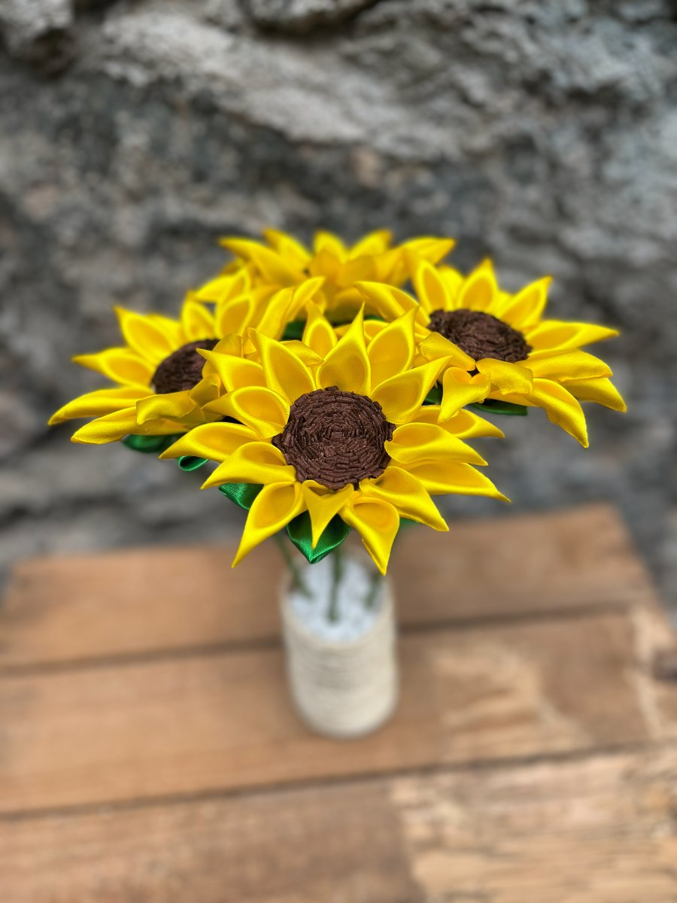
Girassóis em Cetim & Sisal Natural
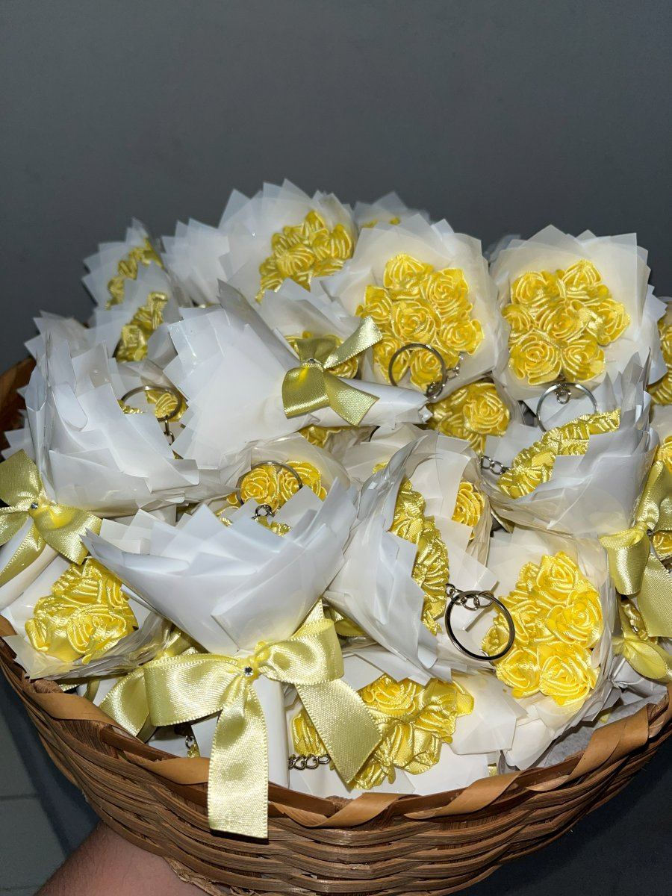
Lembrancinhas para Eventos
Casamentos, Aniversários & Festas
Combinação harmoniosa entre o brilho nobre do cetim e o toque rústico natural.
Confeccionamos nas cores exatas da identidade visual da sua festa ou decoração.
Embalagens prontas para presentear e surpreender quem você ama.
Aceitamos encomendas de lembrancinhas artesanais produzidas especialmente para o seu evento. Uma recordação útil, delicada e cheia de significado que seus convidados guardarão com afeto.
Acabamento com laço, strass e argola de chaveiro
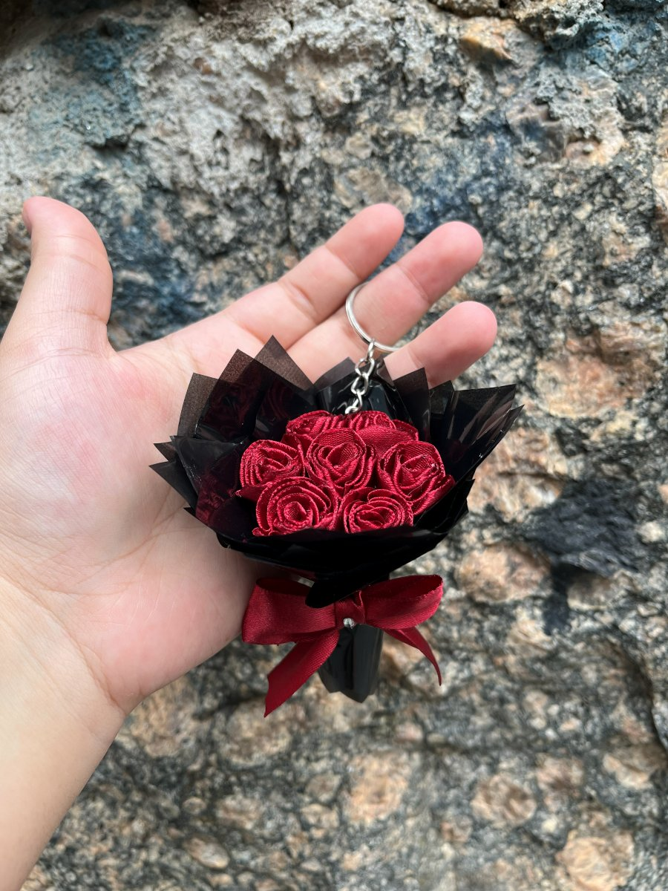
Mini Buquê Luxo
Rosas em cetim na palma da mão
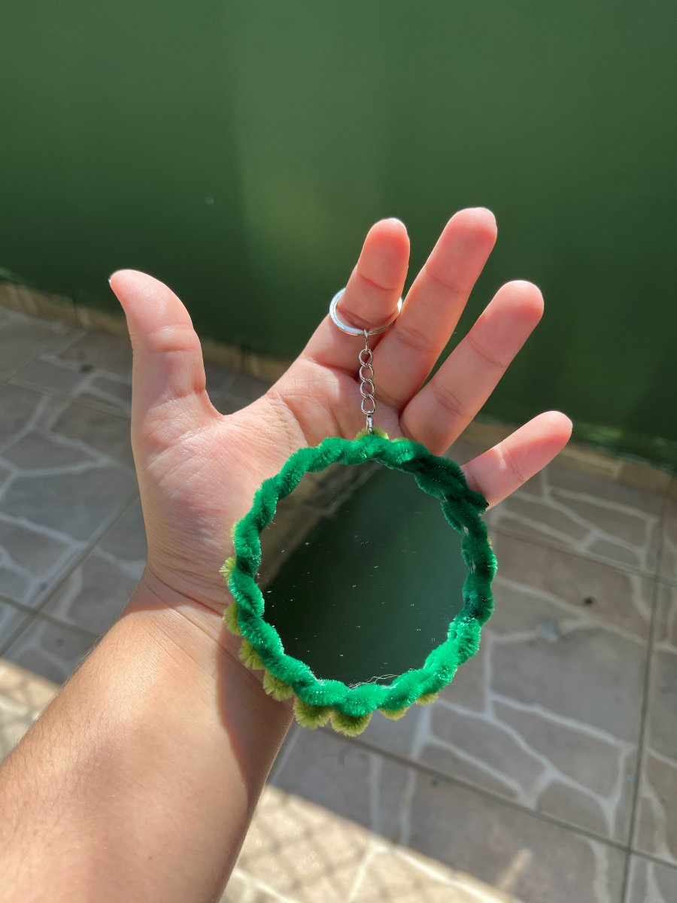
Chaveiro Flor & Espelho
Mimo funcional e encantador
Mini buquês de cetim, chaveiros florais e convites afetivos para padrinhos. Personalizamos as cores das rosas e dos laços para harmonizar com a paleta do seu casamento.
Chaveiros de flores aveludadas (com opção de espelho de bolso no verso) e arranjos de mesa em vasinhos de sisal que decoram a festa e encantam os convidados.
Mimos delicados para celebrar nascimentos, batizados, Dia das Mães, Dia da Mulher e eventos corporativos com cartões personalizados feitos com todo cuidado.
Escolha as cores, quantidade e modelo ideal para a sua comemoração.
Explore os detalhes de nossas flores em cetim, chaveiros personalizados, vasinhos em sisal e buquês eternos. Clique em qualquer foto para ampliar.
Rosas em cetim amarelo com argola de chaveiro e laço acetinado.
Pétalas de cetim com base rústica revestida em sisal.
Rosas de cetim vermelho em formato compacto para bolsas e chaves.
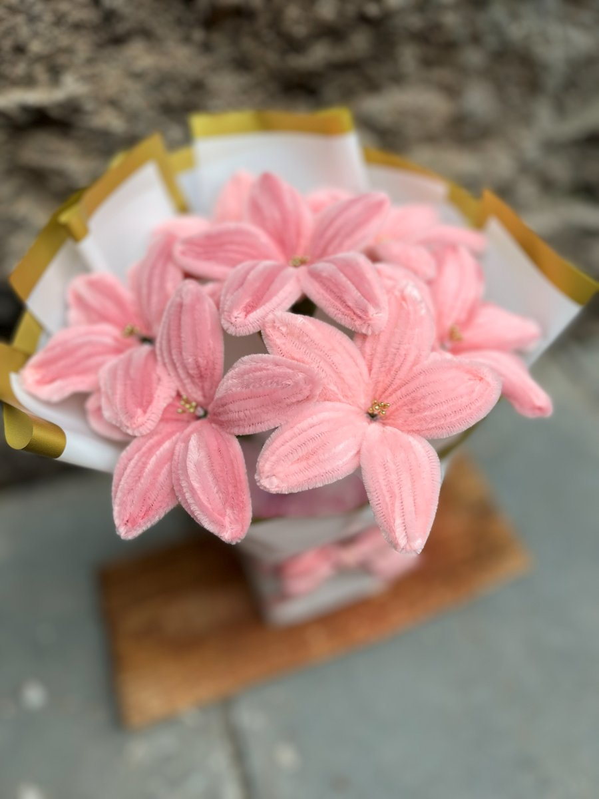
Toque macio e acabamento delicado em tons pastel.
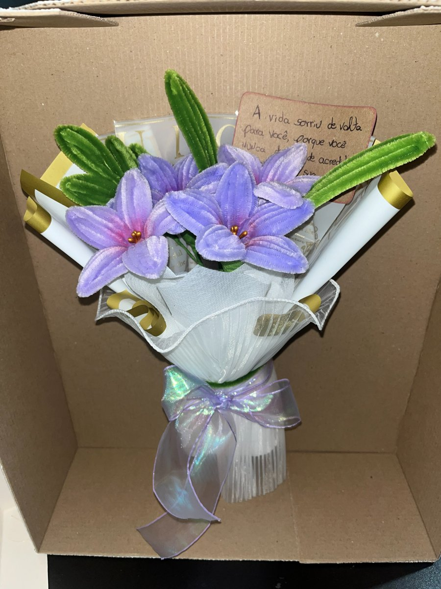
Acompanha cartão afetivo personalizado para presentear.
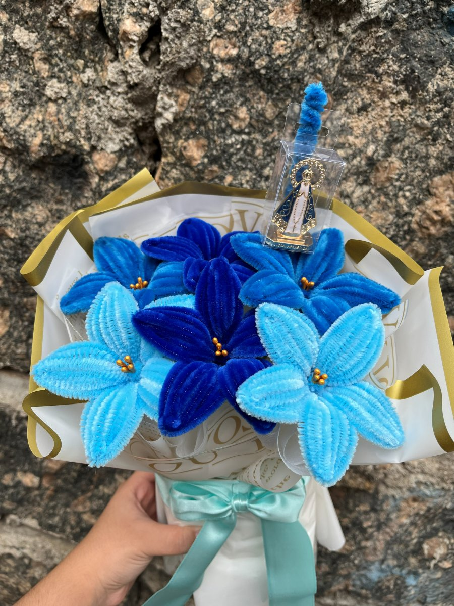
Lírios artesanais em azul royal e celeste para momentos de fé.
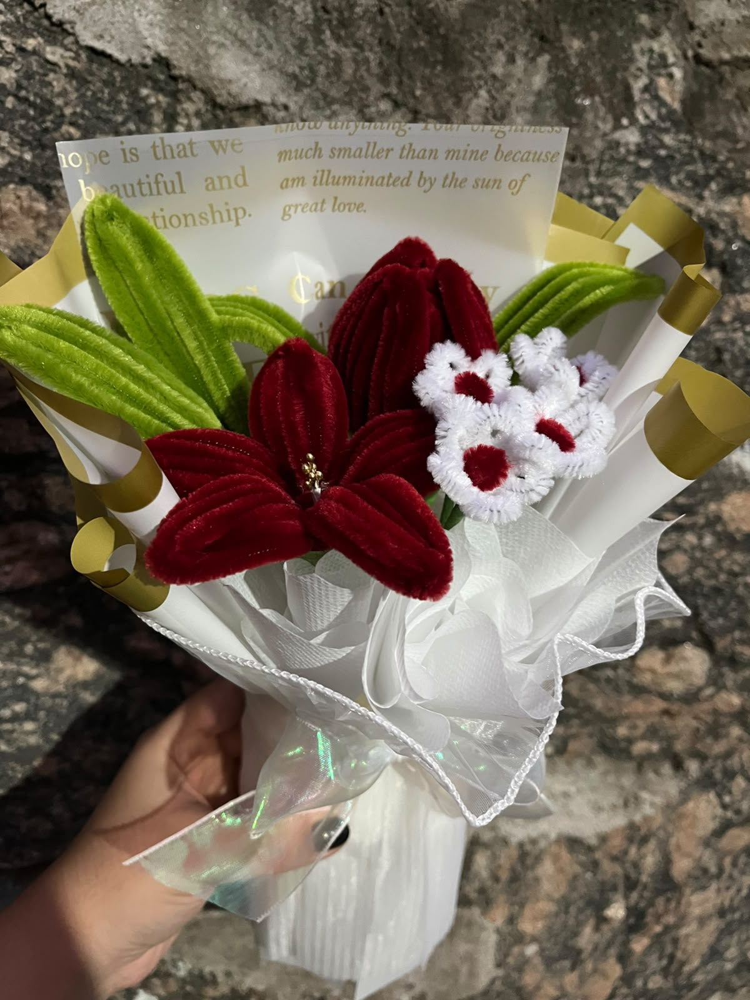
Mix de lírio, tulipa e mini flores com embalagem romântica.
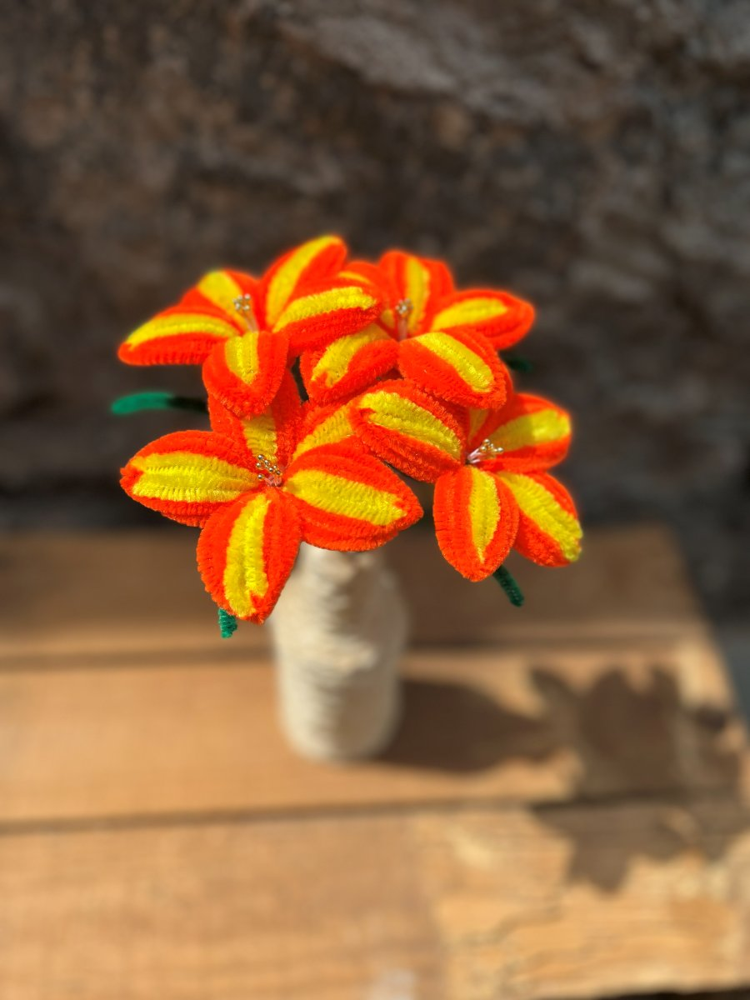
Ideal para decoração de mesas de festa e ambientes aconchegantes.
Lembrancinha útil e charmosa para bolsas e nécessaires.
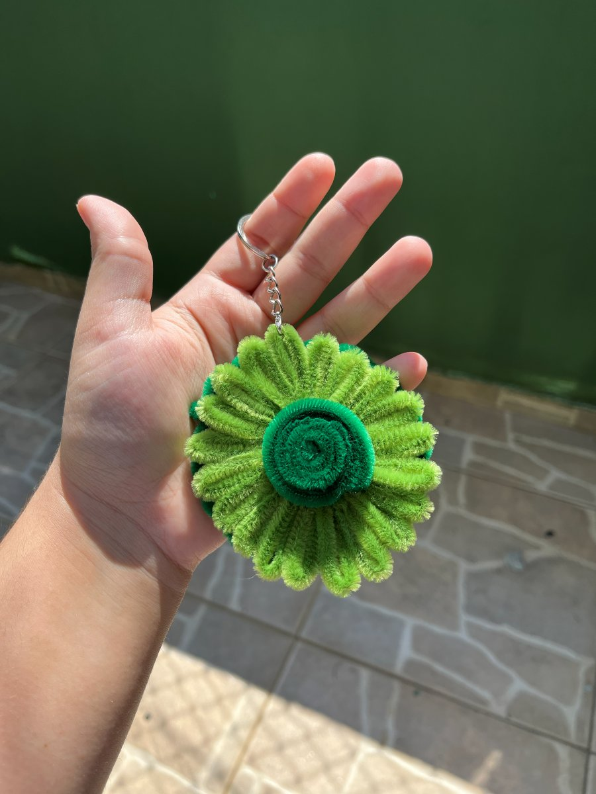
Design autoral inspirado nas cores da natureza.
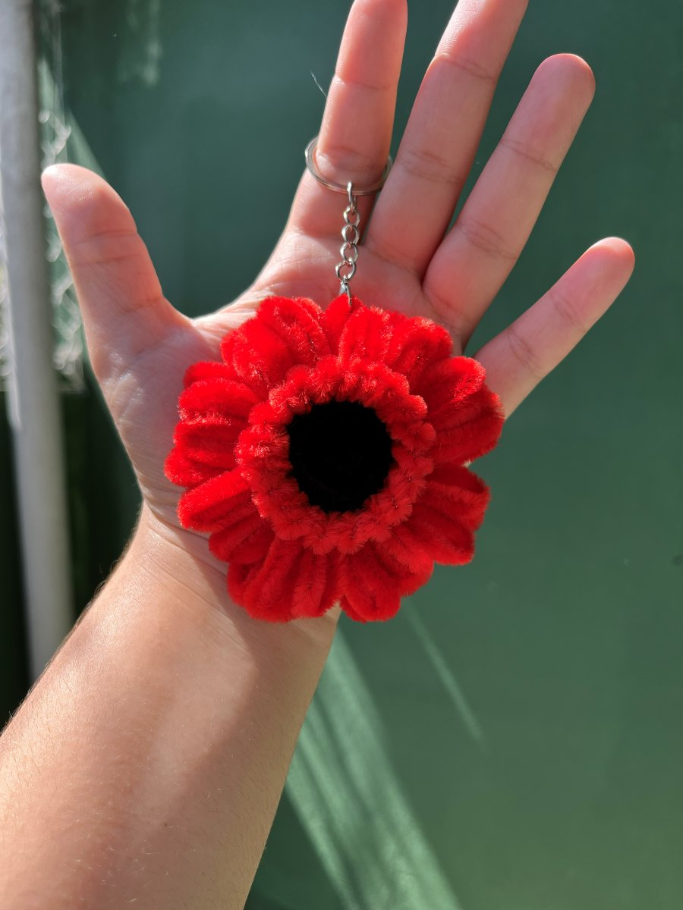
Pétalas volumosas e macias que destacam qualquer bolsa.
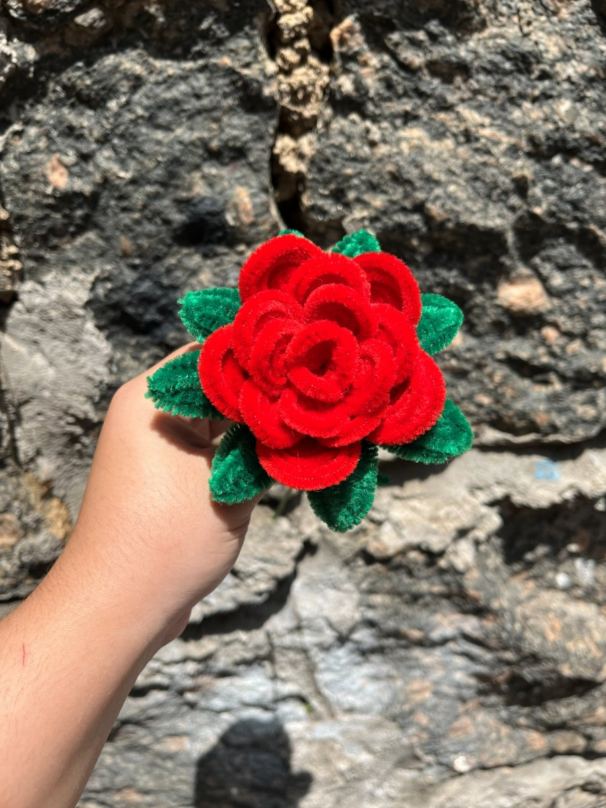
Perfeita para homenagens, Dia das Mães e Dia da Mulher.
Entre em contato para tirar dúvidas, consultar prazos de confecção e personalizar suas lembrancinhas ou buquês.
Região de Atendimento
Carapicuíba e região
WhatsApp Direto
+55 11 98599-2591
Instagram Oficial
@jardi.mdecetim
Jardim de Cetim Artesanatos
Feito à mão com amor em cada detalhe
Preencha os detalhes abaixo para enviar sua solicitação pronta diretamente para o nosso WhatsApp: